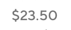

Final design

DoorDash features more or less the same information to its users. How can DoorDash create variety while simultaneously offering relevant choices that appeal to users?
Doordash can further customize its food choices based on factors such as day, time of day, and weather while utilizing inviting phrases to which the user can relate. Because I have decided to use these factors, I believe that presenting different dish options rather than restaurant options is the more appropriate approach.
See options that are relevant to their specific environment and conditions + save time by being exposed to something more specific.
Expose and showcase their specific dishes, rather than simply the restaurant itself or their default featured picture.
Increase conversion rate.
I decided to create a survey using Survey Monkey to assess which pieces of information people prioritize. I presented 8 pictures of Dashdoor's current display of a restaurant option alongside 8 designs I created that displays dish options, such as the example below.
A lot of my original assumptions were off, and I discovered that the participants preferred the original display. I also realized that I should have given the participants more context in the survey that explains under what circumstance the dish title would appear. So I followed up with the participants and asked for their reasoning.

Some people were immediately intimidated by the prices.
Because of the wide-ranging possibilities for the phrases that can be implemented within this feature, I wanted to make sure that the phrases can be properly categorized.
I grouped them under Personalization and Food specificity. Personalization refers to the greeting of the phrase, which also narrows the food options if personalized enough. Food specificity refers to how general or specific the food choices are.
Dishes: The reason I decided to create a feature that displays dishes instead of restaurants was to intentionally break the existing pattern. By displaying a piece of information that is slightly different from the rest, users will pay more attention to the content. Additionally, because DoorDash's target audience is "time-starved people," I believe that presenting more specific options would eliminate the anxiety that comes with being given too many choices, which ultimately saves users time.
Phrases: The phrases were the most important factor in creating this design because the phrases determined the categories. I believed I was able to experiment with more approachable language because of DoorDash's identity–colorful, playful, friendly.
Prices: I decided to display the price because they are very specific to the dish and I believe that hiding the price can mislead the user. Bearing the survey findings in mind, my solution was to display dishes with lower prices, and display higher-priced ones within the "See All."
Following the implementation of this feature, the next step would be to gather more data and conduct more research. Previously, I came up with various phrases with various levels of personalization and food specificity. With more data as to which phrase categories succeed in garnering more orders, we can refine our display and focus more on the category.
1 The most important thing I did during this project was to do research early within the process. I learned that my assumptions were off, and thankfully I was able to quickly fix my design and present better solutions because of this.
2 Because of my error, I learned that I need to be more thorough in my research method if I wanted to gather relevant information.
3 I realized that there is no shame in being wrong, and that it's crucial to listen to other people's insights as a designer.